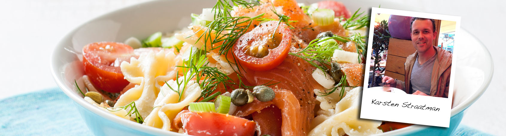

Aanmelden | Inloggen

Lauwe pastasalade met gerookte zalm van Karsten Straatman
- Menu Hoofdgerechten
-
- Bereidingstijd
- Minuten
-
- Personen
- 4
Karsten Straatman. “Ik houd van Italiaans eten, de Italiaanse sfeer en de manier van leven. Ik vind Rome één van de mooiste plekken op aarde en heb zelfs mijn vrouw in deze stad ten huwelijk gevraagd. Deze heerlijk frisse pastasalade is ideaal voor een etentje in het gras.”
Instructies
- 1. Kook de pasta volgens de verpakking in een ruime pan met een beetje zout. Snijd ondertussen de cherrytomaten door de helft, de bosuitjes in kleine ringetjes en de gerookte zalm in stukjes.
- 2. Giet de pasta af en laat het goed uitlekken. Doe de pasta in een kom en laat het wat afkoelen.
- 3. Roer vervolgens de roomkaas door de lauwe pasta en daarna de tomaatjes, bosuitjes, de kappertjes en de zalm. Knijp boven de kom een halve citroen uit zodat het sap zich mengt met de pasta.
- 4. Breng het gerecht op smaak met zout en peper en een beetje verse of gedroogde dille
Meer over
Waardeer dit gerecht
Ingrediënten
- 300 gr vlinderpasta
- zout
- 250 gr cherrytomaten
- 3 bosuitjes
- 150 gr Top! van Coop vriesvers gerookte zalmfilet
- 100 gr roomkaas
- 1 el kappertjes
- halve citroen
- peper
- 1 el verse of 1 tl gedroogde dille
Bekijk je boodschappenlijstje